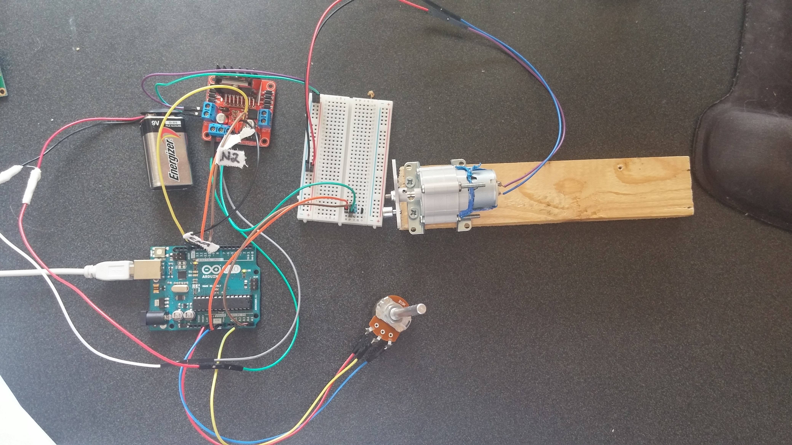

Motor Speed Control Using Open/Closed Loop Control System

Controls Lab project used the Arduino as a way to implement a control system. The project involved a throttle (potentiometer), H-Bridge Stepper Motor Driver, DC brushed motor, planetary gear set, and eccentric mass (magnet) that determined speed by sampling data from a fixed hall-effect sensor. The project was run through Lab-View to collect the data.
The objective of the project was to map a 5V potentiometer to a motor with an unknown rpm range. The speed of the motor would be determined by reading the signal of the hall-effect sensor.
Explored ways to improve the performance by implementing a closed loop feedback control system.
The open loop response was compared to the corresponding potentiometer inputs and the drawbacks of the open loop system were analyzed.